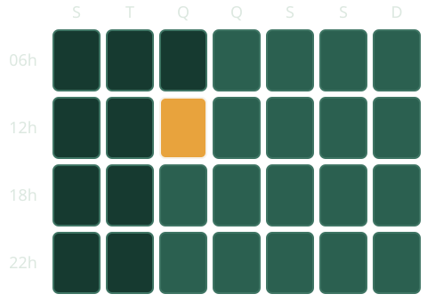
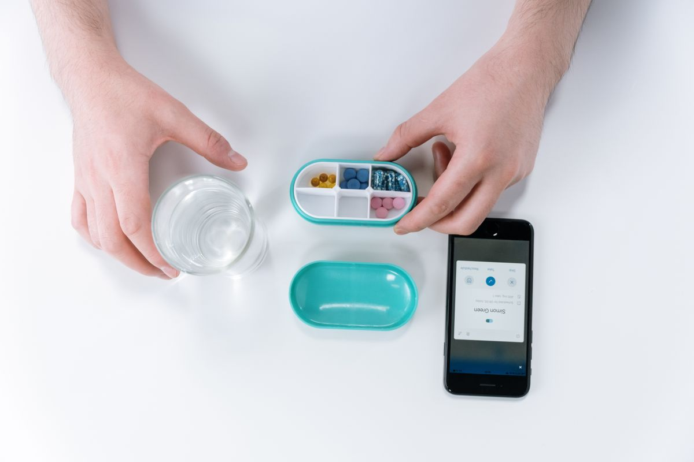
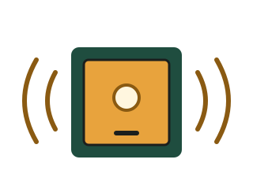

A caixa que só para de tocar quando a dose é tomada
Um porta-comprimidos de 28 compartimentos para quem toma remédio todo dia. O alarme continua até o idoso abrir a tampa certa.
Como funciona
O alarme do celular é fácil de calar
- O celular toca na hora do remédio.
- “Já vou tomar.”
- O alarme é desligado.
- A dose da tarde ainda está no compartimento.
E quem cuida está no trabalho, em outra casa ou em outra cidade. Só descobre o que aconteceu quando pergunta, e às vezes nem assim.

Como funciona
-
1
A caixa toca
O alarme dispara no horário, mesmo sem internet. A soneca adia 5 minutos, no máximo 2 vezes.
-
2
O LED mostra a tampa certa
Só o compartimento daquela dose acende. Abriu outra tampa? A caixa dá um bipe de erro e continua tocando.
-
3
O cuidador é avisado
Se a tampa seguir fechada 30 minutos depois do horário, o aviso chega no celular de quem cuida.

Faça o alarme parar
São 12h e a caixa está tocando. Só abrir a tampa resolve.
Para quem é
Simulador de dose
Quanto tempo depois do horário a tampa certa foi aberta? Digite os minutos e veja como a dose fica registrada.
- Tomada até 30 minutos
- Atrasada de 30 a 60 minutos
- Perdida depois de 60 minutos
Contador de doses da semana
A caixa tem 28 compartimentos. Marque aqui cada dose tomada.
0 de 28 doses tomadas
A semana no painel do cuidador
É assim que quem cuida acompanha as doses. Os dados abaixo são só um exemplo.
| Horário | Seg | Ter | Qua | Qui | Sex | Sáb | Dom |
|---|---|---|---|---|---|---|---|
| 06h | Tomada | Tomada | Pendente | Pendente | Pendente | Pendente | Pendente |
| 12h | Tomada | Atrasada | Pendente | Pendente | Pendente | Pendente | Pendente |
| 18h | Tomada | Tomada | Pendente | Pendente | Pendente | Pendente | Pendente |
| 22h | Perdida | Tomada | Pendente | Pendente | Pendente | Pendente | Pendente |
Impacto
A Dose Certa ainda é um protótipo, então não temos números de uso. O que vamos medir é a porcentagem de doses tomadas em até 30 minutos do horário.
Um limite que assumimos: abrir a tampa não prova que o remédio foi engolido.
-
3
Saúde e bem-estar
Ajuda a manter em dia o tratamento de doenças como pressão alta e diabetes.
-
10
Redução das desigualdades
O idoso não precisa saber usar aplicativo. Basta abrir a tampa que acendeu.
-
11
Cidades e comunidades sustentáveis
Apoia quem envelhece na própria casa, perto da família e do bairro.
Equipe
- Arthur Deocleciano RM574299
- Diego Alejandro RM575447
- Victor Santos RM575508